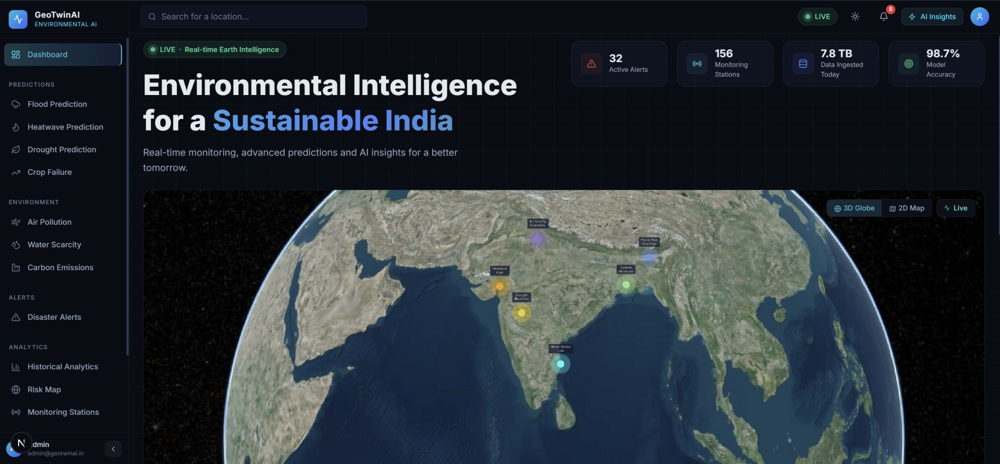
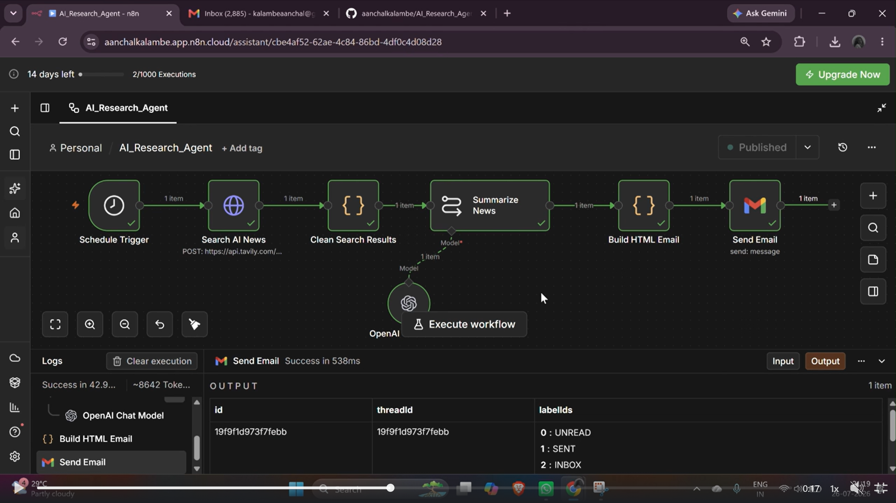
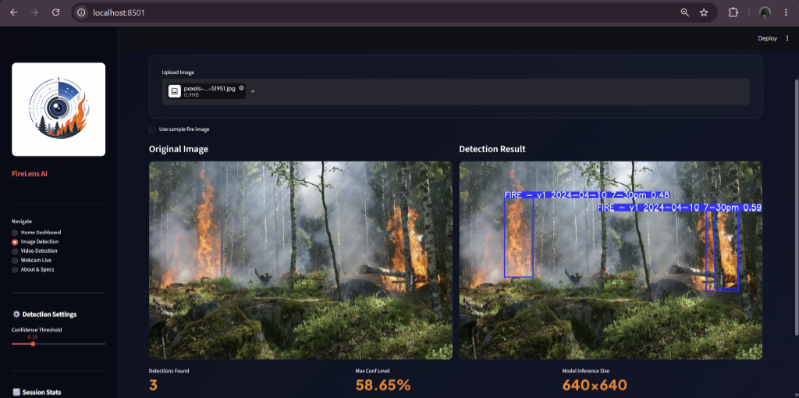
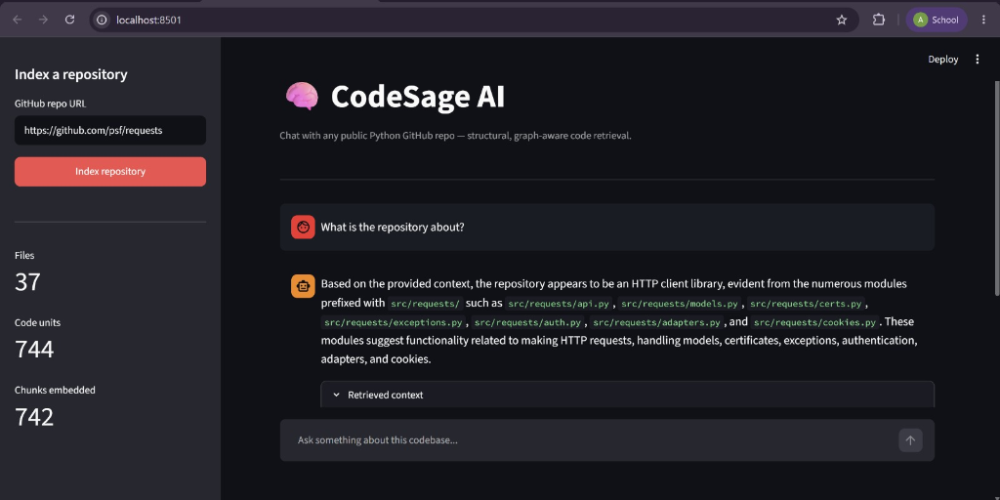

I am currently pursuing B.tech, specializing in Artificial Intelligence. I take keen interest in learning about emerging technologies and infusing myself with its ever-evolving knowledge.
Psychology, Art, Dance, Neural Science are the topics that fascinate me a lot!
My technical proficiency lies in -
Also, I am currently exploring topics such as AI Agents, Agentic AI and Web Development.
During my coursework, I have developed various projects that are listed below:
It is a climate digital twin that gives weather updates of a specified location to the user.

This is a Python-based application to automate information gathering, processing, summarization, and insight generation.

This is a computer vision solution for detecting potential forest fires in images and video streams using YOLOv11

It is is an intelligent RAG-powered GitHub repository assistant that goes beyond text retrieval by understanding code structure, functions, classes, and project architecture.

https://www.linkedin.com/in/aanchalkalambe
aanchalkalambe.work@gmail.com
https://github.com/aanchalkalambe